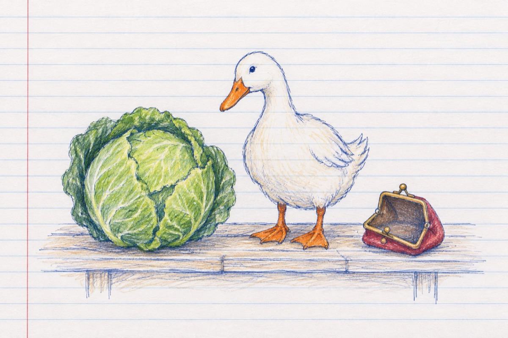

Din doi în doi
Din doi în doi de numeri
O să ajungi la patru
La cinci, o să cam strângi din umeri
Că-așa-i în teatru!
Dar de te duci la piață
Și iei o varză mare
Și lângă ea o rață
Apoi să te ții Mardare!
Te uiți în portmoneu
Și-l scotocești de moarte
Și parcă-ți pare rău
Căâ nu știi a socoate
Din tot ce-ai adunat
Nici n-ai ce să mai numeri iată
Te miri ce s-a-ntâmplat
Cred că-ai uitat, nu ești la teatru ci în piață!
Vasile Groza